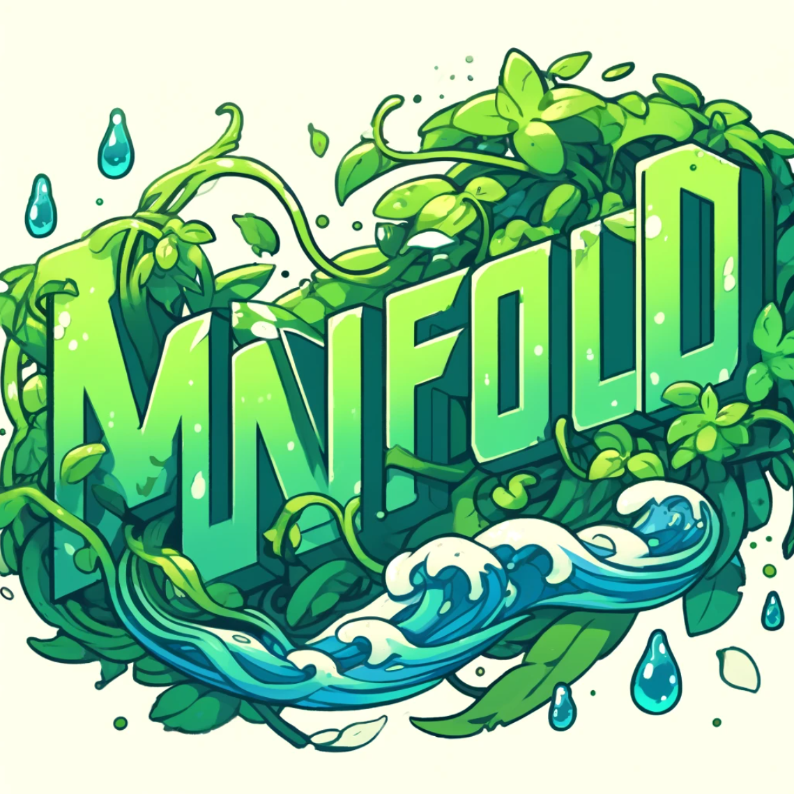

该项目为基于 C++ 开发的跨平台 2D 游戏引擎，支持 Windows、macOS 与 Linux 平台。
引擎采用模块化与组件化设计，核心功能涵盖渲染、输入、音频、物理与脚本系统，用于支撑完整的 2D 游戏开发流程。
底层基于 SDL2 实现 2D 渲染与音频播放，集成 Box2D 构建物理系统，支持刚体、碰撞检测与射线检测，并通过回调机制向逻辑层分发物理事件。
引擎支持 Lua 脚本系统，通过 LuaBridge 实现 C++ 与 Lua 的交互，用于解耦引擎逻辑与游戏玩法逻辑。
资源与场景数据采用 JSON 配置，使用 rapidjson 实现数据驱动的资源加载与场景构建流程。
内置 Sprite 动画系统，并集成 Spine-SDL Runtime，支持精灵序列帧动画与骨骼动画播放。
